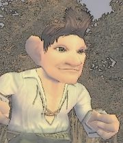

Wilbur
Age : 26
Sexe : Homme
Race : Gnome
Faction : Alliance
Formation : Voleur
Description : Wilbur est né, ce qui est déjà une bonne chose en soi.
Ses parents un ingénieur roublard un peu fou du nom de Pizzle le Twizzle et Guêtre l'ont eu tardivement mais s'en sont bien occupés jusqu'au décès du père, alors que Wilbur n'est qu'un enfant.
Dans le restaurant de sa mère à Gnomeregan, il suit les exploits de son grand-père maternel surnommé "Papi Tromblon".
Lorsque sa mère disparaît à Lordaeron, Wilbur est déjà un jeune adulte.
Son grand-père à l'hospice et le reste de sa famille fuyant la capitale gnome irradiée, Wilbur décide de partir explorer le monde pour découvrir le secret des meilleures tartes aux fruits du monde.
Plus d'infos sur Wilbur >>>